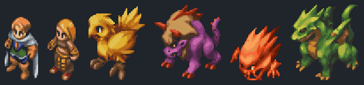
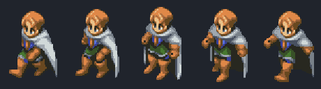
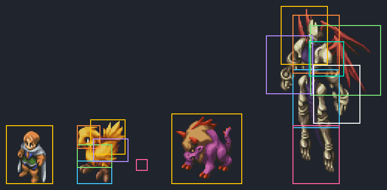

Idle Animations: Still & Breathing
From the author:
This mod has been created with the help of Claude Code and tested by me. As a new player, I haven't been able to extensively test the mod and check all the creatures, bosses, etc. I will get to them as I progress the story. If you'd like to help, send me your save file where you found bugs and I'll do my best to patch it.
I've created this mod because I've never played the game before and always wanted to, but this one thing has always bugged me. I understand that those who have played FFT before are likely okay with how idle animaitons work. But to me, it never felt right, especially since the fact that in cutscenes characters are standing still. So, I created this mod for myself mostly. I've seen others asking around for this, so this is why I'm sharing it. I will keep updating the mod as new bugs are discovered. I know that the "breathing" idle animation is far from ideal, but it's basically all that can be done. You can't really create unique idle animations for different characters, because as you will learn from this manual, all humanoid creatures share the same 4-5 types with the same animation loop. So, you can realistically only change animation for a character type, which then changes it for all in-game characters that has this type. I'd personally stick with the "still" idle option and just treat the "breathing" one as experimental.
What This Mod Does
In battle, every unit in the original game constantly walks in place while it waits for its turn. This mod replaces that loop. Depending on the version you enable, units either stand perfectly still, as they already do in the game's story scenes, or stand and breathe: the body from the waist up, hands included, settles by one sprite pixel and rises again, while the legs and feet stay planted. Units standing in water behave the same way as on dry ground.

Still (Humans)
Human units stand still. Monsters, chocobos and bosses keep the game's own idle.
Still (Everyone)
Every unit stands still while idle, including monsters, chocobos and the two Altima forms. The recommended default.
Breathing
Humans, monsters and chocobos breathe. The Altima forms keep their original hovering idle.
Copy one of the three mod folders into Reloaded-II\Mods and enable it for the game in Reloaded-II. See How to Install and How to Remove. Enable only one of the three versions at a time.
1How Idle Animations Work
Ivalice Chronicles keeps the original PlayStation game's sprite and animation system underneath its new presentation. The files are renamed and packed differently, but their contents and logic are the same. That is why one small, careful change to a handful of data files is enough to change how every unit idles.
Three Layers: Sheet, Frames, Animations
A unit on screen is built from three separate pieces of data:
- Sprite sheet. One image per character (for example the male Knight) containing every body part and pose the character needs. The original sheets are 256×488 pixels with 16 colours. The Sprite Modding Toolkit exports them at double size (two PNG files per sheet).
- Frame layout (SHP file). Describes each frame, meaning each pose, as a list of rectangular blocks cut from the sheet. Each block has a source position on the sheet, a size from a fixed list (8×8 up to 56×56), a position on screen, and optional mirroring. One SHP file is shared by every character of the same body type, so all those sheets must use the same arrangement.
- Animation sequences (SEQ file). Up to 256 numbered animations. Each is a list of steps such as “show frame 11 for 6 ticks” (a tick is 1/60 of a second), plus a few commands, for example the marker that makes a loop repeat. Also shared by a body type.

In Battle
When a unit is not doing anything, the game plays its idle animation. Units are drawn facing either toward the camera (“front”) or away from it (“back”); the other two directions are the same pictures mirrored. The idle comes in three speeds because Haste and Slow change how fast a waiting unit moves:
| Animation | What it is | Original length |
|---|---|---|
| 0 – 5 | Single still poses. Number 2 is the standing pose facing front; number 4 the standing pose facing back. | — |
| 6 / 7 | Idle, front / back, normal speed | 64 ticks (≈1.07 s) |
| 8 / 9 | Idle, front / back, under Haste | 32 ticks (≈0.53 s) |
| 10 / 11 | Idle, front / back, under Slow | 96 ticks (1.6 s) |
| 24 / 25 | Walking from tile to tile (movement) | 28 ticks per cycle |
This numbering is the same in every unit animation file in the game, for humans, monsters, chocobos and bosses alike. In the original game the idle is literally a walk cycle: 8 steps cycling through 5 walking poses (frames 9 to 13 for the front).


Walking from tile to tile uses animations 24 and 25, not the idle. Changing the idle therefore does not make units slide across the map when they move.
Outside Battle
- Menus (the formation screen before a battle, the party roster). These draw units with the same animation files as battle. During testing, units in the menus followed the mod in both Classic and Enhanced.
- Story scenes. In scenes played on the map with the game's own sprites (the dialogue scenes between battles), waiting units already stand still in the original game: the event script shows them on a standing pose rather than the battle idle. That is why Still (Everyone) is the recommended default: battles then look like the story scenes. An event script can still tell a unit to play other animations, such as walking somewhere, and those are unchanged.
- The remaster's extra tables. Ivalice Chronicles adds eight data tables,
nxd/charanimseq0.nxdtocharanimseq7.nxd(inside0004.pac), each holding a copy of about 25 animations for one body type, including the idle and the walk. Battle and menus do not take their idle from these tables, since they follow the mod without them. A test version that also changed the idle in these tables made the game show an “Access is denied (-1593835515)” message at the start of every player turn, so the remaster evidently checks or uses them for its turn display. The mod leaves them unchanged.
In Water
Units standing in shallow or deep water are drawn with only part of the body showing. The frame layout files of the human and chocobo body types therefore contain two lists of frames with the same numbers: the normal (“dry”) list and an in-water list in which every frame shows only the upper body. When a unit stands in water, the game plays the same animation, but takes each frame from the in-water list. The monster layout has no in-water list.
This matters for any new frame: a breathing frame that exists only in the dry list would show whatever the in-water list happens to hold under that number. The first breathing test did exactly that: humans in water raised a hand, or showed only a floating head. The mod now writes an in-water breathing frame next to each dry one, built from the in-water standing pose, so the idle in water looks the same as on land.
Where the Files Live
Everything is inside the game's .pac archives, which can be listed and unpacked with Nenkai's FF16Tools. Both game modes keep their own archives, and all of the unit animation files are in 0002.pac, in the folder fftpack/unit/:
| Remaster file | Original PlayStation name | Contents |
|---|---|---|
battle_type1_seq.bin | TYPE1.SEQ | Animations, human body type 1 |
battle_type1_shp.bin | TYPE1.SHP | Frame layout, human body type 1 |
battle_*_spr.bin | *.SPR | Sprite sheets (one per character, not changed) |
The Classic and Enhanced copies of every file this mod changes were compared and are byte-for-byte identical, so one set of files works for both modes. A second copy of the same files is embedded in the legacy archive system/ffto/fftpack.en.bin; the FFT Mod Loader redirects those entries to the mod's files as well (its log shows “mapping file … (en)”). A search of every other archive (about 1 GB of unpacked data, plus both game executables) found no other copy of the idle animation besides the charanimseq tables.
2What Has to Change
To Stand Still
Only the animation files need to change. In animations 6 to 11, every step's frame number is replaced with the standing pose's frame. The number of steps and their delays stay exactly as they were, so the file keeps the same size and every other animation stays at the same position in the file. This is the safest kind of edit possible: the game reads the file exactly as before and simply gets a different picture.
To Breathe
A breathing pose does not exist in the game. There are two ways to get one:
- Draw new art. A new pose would have to be painted into every character's sprite sheet (several hundred sheets, plus their HD versions), and the sheets have almost no free space. Not practical.
- Build it from pixels that already exist. This is what the mod does. Because a frame is just a list of blocks cut from the sheet, a new frame can reuse the standing pose's pixels and arrange them differently.
The breathing frame takes the standing pose, cuts it along a body line, and draws everything above the line one pixel lower (two pixels on the HD sprites). The body from about the waist up settles slightly while the legs and feet stay planted. The idle loop then alternates between the normal standing pose and this settled pose:

A cut can only fall on the sprite sheet's 8-pixel grid, because blocks are cut from the sheet in multiples of 8 pixels. For a human that leaves three possible heights: 16, 24 or 32 pixels below the top of the pose. An earlier version cut at 24 pixels, across the chest, which split the arms: the shoulders moved but the hands stayed, and the wrists looked broken on every breath. The cut at 32 pixels is the first one below the hands, so the arms and hands move together with the body and only the lower legs and feet (the bottom 8 pixels) stay planted.

| Idle speed | Standing | Breathing | Back to standing | Total |
|---|---|---|---|---|
| Normal (6 / 7) | 36 ticks | 26 ticks | 2 ticks | 64 ticks |
| Haste (8 / 9) | 18 ticks | 13 ticks | 1 tick | 32 ticks |
| Slow (10 / 11) | 54 ticks | 39 ticks | 3 ticks | 96 ticks |
Each loop keeps its original 8 steps and total length, so Haste and Slow still speed up and slow down a waiting unit, and anything in the game that waits for an idle loop to finish sees the same timing as before.
Making Room for New Frames
Each new pose needs a frame number of its own in the body type's frame layout file, one for the front and one for the back, in both the dry and the in-water list. There is an important restriction: in each layout file, frames numbered above a certain boundary read their blocks from the lower half of the sprite sheet, and the standing poses are at the very top. A breathing frame must therefore get a low frame number, so it cannot simply be added to the end of the list.
The game loads these files into memory areas of a fixed size. An earlier version added the monster breathing frames to the end of the monster layout file, 28 bytes past its original end. The game never read those bytes, so on every breath monsters were drawn from empty data and blinked out and back in. Every file in the mod now has exactly its original size, and the build refuses to finish otherwise.
Within that limit the mod uses three techniques:
| Method | How it works | Used for |
|---|---|---|
| Duplicate frame number | Some frame numbers hold a byte-for-byte copy of another frame. Every animation that used the copy is pointed at the original instead, which changes nothing on screen, and the copy's number is then free for a breathing pose. | Human type 1 (60 / 63, copies of 49 / 53), human type 2 (62 / 63, copies of 11 / 16) |
| Unused frame number | A frame that no animation uses is rewritten. | Chocobo (59 / 60), monsters (13 / 19) |
| Freed space | When the new pose needs more blocks than the old frame had room for, its data goes into space freed elsewhere in the same list: a run of frames that are exact copies of earlier frames is pointed at those earlier copies, which again changes nothing on screen, and the bytes they occupied are reused. | Monsters (both poses), human type 2 (in-water poses) |
It Works per Body Type, Not per Character
Because frame layouts and animations are shared, a change applies to every character with that body type at once. That is what makes this mod possible with so few files, but it also means a single character cannot have its own idle with these files alone. Every Knight, Squire, Dancer and so on with the same body type gets the same new idle, drawn with its own sprite sheet's pixels.
3Body Types
Every unit belongs to a body type: a pairing of one frame layout file with one or more animation files. Different body types build their poses very differently, which decides how a breathing pose can be made for them.

| Body type | Animation files | Frame layout | Standing pose | Breathing frames |
|---|---|---|---|---|
| Human, type 1 | type1, type4 | type1_shp | Frames 2 / 8: one 32×40 block | 60 / 63 (copies of 49 / 53, freed) |
| Human, type 2 | type2, type3 | type2_shp | Frames 2 / 8: one 32×40 block | 62 / 63 (copies of 11 / 16, freed) |
| Chocobo | cyoko | cyoko_shp | Frames 2 / 4: six small blocks | 59 / 60 (unused) |
| Monster | mon, ruka | mon_shp | Frames 2 / 4: one 48×48 block | 13 / 19 (unused, data in freed space) |
| Altima, 1st form | arute | arute_shp | Frames 1 / 10: three blocks | Not needed (see below) |
| Altima, 2nd form | kanzen | kanzen_shp | Frames 1 / 10: eight blocks | Not needed (see below) |
| Other | other | other_shp | Small objects | Not changed by the mod |
Humans
Humans come in two frame layouts, type 1 and type 2. Each layout serves two animation sets: type 4 animations reuse the type 1 layout, and type 3 animations reuse the type 2 layout. (An earlier version assumed the opposite pairing. The type 3 animations use frame numbers up to 198, which exist only in the type 2 layout, and a unit with type 3 animations, Albin, raised both hands on every breath, because frame 32 of the type 2 layout is a level-up pose.) The standing poses are a single 32×40 block in the same place on the sheet for both layouts; walking and attacking poses add separate blocks for the arms. The breathing frame cuts the standing block into a 32×32 upper body and a 32×8 lower body. Some monsters are built like humans and appear to use the human layouts: Goblins, Mindflayers (Squids) and Skeletons did not render correctly with the monster layout, so they should breathe along with the humans.
Chocobos
A chocobo's standing pose is already made of six small blocks (head, body, tail and legs). No cutting is needed: the blocks above the legs move down one pixel and the legs stay. The chocobo layout had two unused frames with room for exactly six blocks each.
Monsters
Most monsters share one layout in which every pose is a single 48×48 block. Its breathing frame cuts that block into three 48×16 strips and lowers the top two, so the lower third (legs, base or tail) stays planted. How well that suits a creature depends on its shape; see One Idle for Every Monster below. These sprite sheets were confirmed to use the monster layout: Bomb, Coeurl, Ghost, Ahriman, Cockatrice, Pig, Treant, Minotaur, Malboro, Behemoth, Dragon, Tiamat, Apanda, Elidibus, Demon and Automaton. Breathing previews were checked for eleven of them: Bomb, Behemoth, Dragon, Coeurl, Ghost, Ahriman, Cockatrice, Treant, Minotaur, Malboro and Demon. The ruka animation set shares this layout and gets the same treatment.
One Idle for Every Monster
All of these monster families share one animation file and one frame layout. There is a single “monster idle”, and every monster plays it with its own sprite sheet. Whatever the mod does to that idle happens to every monster at once; a Bomb cannot get a different idle from a Behemoth through these files.
In the original game the monster idle, like the human one, is the movement cycle slowed down: the same five poses (frames 2, 8, 1, 9 and 5) that animation 24 plays at twice the speed when a monster moves. What those poses look like depends entirely on the sprite sheet, so the same idle reads very differently from creature to creature:
| Kind of creature | Families | Their original idle |
|---|---|---|
| Floating, no legs | Bomb, Ghost, Ahriman | Bomb pulses; Ghost sways; Ahriman flaps its wings |
| No limbs, rooted | Malboro, Treant | Malboro's mouth and tentacles move; Treant's leaves sway |
| Wings flap during the idle | Ahriman, Cockatrice, Tiamat | Wings spread on some poses |
| Walk on legs | Coeurl, Pig, Minotaur, Behemoth, Dragon, Apanda, Elidibus, Demon, Automaton | Walk in place, like humans |
The breathing pose lowers everything above a fixed line in the 48×48 picture. On four-legged monsters such as the Behemoth and the Dragon this reads as joints and legs shifting slightly while standing, which works well. On creatures that sit low in the picture the line can cross the body itself. The clearest case is the Bomb, where it runs through the eyes, so each breath shows a one-pixel seam across the face. The Bomb also loses its original pulsing flame.

Alternatives were compared: moving only the top third of the picture, and bobbing the whole monster by one pixel. Each fixes some creatures and makes others worse. Since one rule has to cover every monster, the mod keeps the breathing pose, which suits the walking monsters best. The seam on the Bomb, and the lost pulse and sway of the Bomb, Ghost, Malboro and Treant, are a known limitation (see section 9). If you prefer the original monster idle, use Still (Humans), which leaves every monster, chocobo and boss file untouched.
Which Body Type a Sprite Uses
The game does not decide this per sprite sheet file. Each sprite has a 4-byte record in a table inside the game executable: frame layout, animation set, a flying flag and a height. The table has 170 records and is found at offset 0x672300 in FFT_enhanced.exe (the same data is in FFT_classic.exe). The record order appears to follow the Sprite Toolkit's sprite order. That is how the records below were matched to creatures, and it fits everything else observed (Goblins and Skeletons rendering with the human layout, the flying flag on the Ahriman and Cockatrice). A few examples:
| Sprite | Layout | Animation set | Flying |
|---|---|---|---|
| Chocobo | Chocobo | Chocobo | No |
| Goblin, Skeleton | Human type 1 | Human type 1 | No |
| Squid (Mindflayer) | Human type 2 | Human type 2 | No |
| Bomb, Ghost, Treant, Malboro, Behemoth, Dragon … | Monster | Monster | No |
| Ahriman, Cockatrice | Monster | Monster | Yes |
| Elidibus (and, it appears, the Lucavi) | Monster | ruka | No |
| Altima, 1st / 2nd form | Altima 1 / Altima 2 | Altima 1 / Altima 2 | No |
This table is part of the program, not a data file, so the FFT Mod Loader cannot replace it. Giving individual creatures their own idle (for example, the original idle for the Bomb while the Behemoth breathes) would need a Reloaded-II code mod that changes those records in memory at startup, plus an extra animation set for them to point to. All eight animation-set slots are in use, so that also means working out how the game loads its animation files. That is a much larger project and is not part of this mod.
Bosses
The two Altima forms have their own layouts with large multi-block poses. Their original idle is not a walk: it cycles through nearly identical poses that make the body hover and the wings move. That already looks alive, so the Breathing and Still (Humans) versions leave their files out entirely and the game's own idle plays. Still (Everyone) freezes them on their standing pose.
4The Three Versions
| Mod name in Reloaded-II | Folder | Humans | Chocobos, monsters | Altima forms |
|---|---|---|---|---|
| Idle Animations: Still (Humans) | fftivc.animation.stillhumans | Still | Original idle | Original idle |
| Idle Animations: Still (Everyone) | fftivc.animation.standstillidle | Still | Still | Still |
| Idle Animations: Breathing | fftivc.animation.breathingidleall | Breathe | Breathe | Original idle |
Still (Everyone) is the recommended default: it matches the way units already wait in the game's story scenes, and it changes only animation files, never a frame layout. Still (Humans) is for players who like the monsters' original motion (the Bomb's pulse, the Ghost's sway). Breathing adds the most life but is the largest change.
Version 1.1 had a Breathing (Humans) version in the folder fftivc.animation.breathingidle. It has been retired: delete that folder from Reloaded-II's Mods folder. Stand Still is now called Still (Everyone) and Breathing (All Units) is now Breathing; their folders are unchanged.
All three replace the same game files. With more than one enabled, whichever loads last wins, and you can end up with a mix.
5How the Mod Was Made
Tools
| Tool | Used for |
|---|---|
| Reloaded-II and the FFT Mod Loader (Nenkai) | Loading the changed files into the game without touching the game folder |
| FF16Tools CLI 1.13 (Nenkai) | Listing and unpacking the game's .pac archives, and reading the remaster's .nxd tables |
| FFT Ivalice Chronicles Sprite Modding Toolkit | Exported sprite sheets, used to draw previews of every frame |
| Python 3 with Pillow | Small scripts written for this mod: decoding, previewing, patching and checking the files |
| Claude Code (Anthropic) | AI coding assistant: researched the file formats, wrote the decoding, build, verification and diagnostic scripts, rendered the previews and wrote this manual, working with the author, who tested every version in the game |
| ShishiSpriteEditor source (FFTPatcher) and the FFT Hacktics wiki | Documentation of the SEQ and SHP file formats from the original game's modding community |
Process
- Find the files. Every Enhanced archive was listed with FF16Tools. The unit animation files were found in
0002.pac, underfftpack/unit/, renamed from their PlayStation names (for exampleTYPE1.SEQbecamebattle_type1_seq.bin). The other archives hold maps, text, sound, UI, movies and fonts; the only other animation data found was thecharanimseqtables described in section 1.FF16Tools.CLI list-files -i "<game>\data\enhanced\0002.pac" -g fft FF16Tools.CLI unpack -i "<game>\data\enhanced\0002.pac" -f fftpack/unit/battle_type1_seq.bin -o unpacked -g fft - Decode the animations. A decoder based on ShishiSpriteEditor's format description lists every animation as frames and delays. It showed the same layout in every body type: still poses at 0 to 5, the idle at 6 to 11, movement at 24 and 25.
- Look at the frames. A renderer reads a frame's block list from the layout file and assembles it from the Toolkit's exported sprite sheet. This confirmed visually which frames are standing poses and which are walking poses, and later showed every new breathing frame before it went into the game.
- Check the idle is separate from walking. Animations 24 and 25 (movement) use their own steps and timing, so changing 6 to 11 cannot affect how units move.
- Find room for new frames. For each layout, the frames used by all of its animation files were collected, and unused or byte-identical frames below the sheet boundary were looked for, in both the dry and the in-water list (section 2).
- Build the files. One build script produces all three versions from the unpacked originals. It refuses to build if something does not look exactly as expected: a frame chosen as free is in use, two frames treated as copies are not identical, an idle animation has a different shape than the others, or a file would change size.
- Verify. A separate check compares every built file with the original. It confirms that only animations 6 to 11 changed (plus the swaps between identical frames), that only the intended frames changed in each layout file, and that every file has its original size. A renderer then draws each animation set's idle from the built files, on land and in water, on its real layout.
- Test in the game. Still (Everyone) and Breathing were played in Enhanced through story battles and scenes, and the first battle was also tested in Classic. In-game reports drove most of the fixes in this version: the chest cut splitting the wrists, the raised hands in water, Albin raising both hands, and the blinking monsters.
6What Changed, File by File
All files go in FFTIVC\data\combined\fftpack\unit\ inside the mod folder. The combined folder tells the mod loader to use them for both Classic and Enhanced.
Every file keeps its original size. The animation files change only animations 6 to 11, apart from the swaps between identical frames listed below.
Still (Humans)
| File | Change |
|---|---|
battle_type1_seq.bin … battle_type4_seq.bin | Idle 6 to 11 show the standing pose (frame 2 front, 8 back) |
| All other unit files | Not included, so monsters, chocobos and bosses keep their original idle |
Still (Everyone)
| File | Change |
|---|---|
battle_type1_seq.bin … battle_type4_seq.bin | Idle 6 to 11 show the standing pose (frame 2 front, 8 back) |
battle_cyoko_seq.bin, battle_mon_seq.bin, battle_ruka_seq.bin | Idle 6 to 11 show the standing pose (frame 2 front, 4 back) |
battle_arute_seq.bin, battle_kanzen_seq.bin | Idle 6 to 11 show the standing pose (frame 1 front, 10 back) |
Breathing
| File | Change |
|---|---|
battle_type1_shp.bin | Frames 60 and 63 rewritten as the front and back breathing poses, in both the dry and the in-water list |
battle_type1_seq.bin, battle_type4_seq.bin | Idle 6 to 11 alternate frame 2 / 60 (front) and 8 / 63 (back). Animations that used 60 / 63 now use their identical copies 49 / 53 (type 1: 85, 89, 233; type 4: 19, 21, 23, 50, 112). |
battle_type2_shp.bin | Frames 62 and 63 rewritten as the breathing poses; the in-water versions are stored in freed space |
battle_type2_seq.bin, battle_type3_seq.bin | Idle 6 to 11 alternate frame 2 / 62 and 8 / 63. Animations that used 62 / 63 now use 11 / 16 (type 2: 85, 89, 233; type 3: 18 to 23). |
battle_cyoko_shp.bin | Frames 59 and 60 rewritten as the chocobo breathing poses, dry and in water |
battle_cyoko_seq.bin | Idle alternates frame 2 / 59 and 4 / 60 |
battle_mon_shp.bin | Frames 13 and 19 become the breathing poses, stored in space freed from duplicate frames |
battle_mon_seq.bin, battle_ruka_seq.bin | Idle alternates frame 2 / 13 and 4 / 19 |
| Altima files | Not included, so the original idle plays |
One small, deliberate difference comes from the frame swaps. Frames 62 / 63 and 11 / 16 of the type 2 layout are identical on land, but not in water: there, 62 / 63 showed only a head (a unit in deep water) while 11 / 16 show the upper body. After the swap, the few deep-water animations that used 62 / 63 show the upper body instead of the lone head. All other swapped frames are identical in both lists.
Not Changed by Any Version
- Sprite sheets, palettes, portraits and HD textures.
- Every animation other than the idle (attacks, spells, movement, reactions), apart from the frame swaps between identical frames listed above.
- The remaster's
charanimseqtables (see section 1). - The game executables.
- The game folder itself. The mod loader applies the files when the game starts.
7How to Install
Requirements
- Reloaded-II, with the game's executables added as applications:
FFT_enhanced.exeand/orFFT_classic.exe. - FINAL FANTASY TACTICS – The Ivalice Chronicles Mod Loader by Nenkai, installed in Reloaded-II. The mod was built against version 1.7.5.
Steps
- Choose one version:
fftivc.animation.stillhumans,fftivc.animation.standstillidleorfftivc.animation.breathingidleall(see section 4). - Copy that whole folder into Reloaded-II's
Modsfolder, for exampleD:\Reloaded-II\Mods\fftivc.animation.breathingidleall. Keep the folder name and everything inside it as it is. - Open Reloaded-II and select the game (for example
fft_enhanced.exe). - Tick the mod, which appears as Idle Animations: …. Make sure the FFT Mod Loader is ticked as well; Reloaded-II asks for it if it is missing.
- If you play both modes, select the other executable (
fft_classic.exe) and tick the same mod there too. Reloaded-II treats the two modes as separate applications. - Start the game through Reloaded-II. Started any other way, the game runs without mods.
Switching Versions
Untick the version you have, tick the one you want, in each game mode you play, and restart the game.
8How to Remove
- To turn it off: untick the mod in Reloaded-II for each game mode and restart the game.
- To remove it completely: also delete its folder from Reloaded-II's
Modsfolder.
Nothing else needs cleaning up. The mod never modifies the game's own files: the mod loader supplies the changed files while the game runs, so once the mod is off, the game uses its original animations again. Save files are not affected, since the mod changes only how units are drawn.
9Troubleshooting
The game may occasionally crash, for example during a story scene or after a long time in a menu. I'm not sure this is related to the mod: the cause has not been found yet (see Crash Investigation). If it happens to you, please let me know what was on screen and which version you had enabled.
Classic and Enhanced
The mod works in both versions of the game, Classic and Enhanced. Both use byte-identical animation files, so one set of files serves both (see section 1). Reloaded-II treats the two modes as separate applications, so enable the mod for each executable you play (see How to Install).
Compatibility with Other Mods
I haven't tested whether this mod is compatible with any other mods. Any mod that replaces the same animation or frame layout files (the battle_*_seq.bin and battle_*_shp.bin files listed in section 6) will conflict with this one, and whichever loads last wins. If you run into compatibility issues, leave a comment and I'll see what I can do.
Testing Status
| Part | Status |
|---|---|
| Still (Everyone) | Tested in game Story battles and scenes in Enhanced, first battle in Classic, menus |
| Still (Humans) | Built and verified The same human files as Still (Everyone); the other units use the game's own files |
| Human breathing | Tested in game Several jobs and story characters (Albin included), on land and in water |
| Monster breathing | Tested in game Floating and four-legged monsters, no blinking |
| Chocobo breathing | Checked in previews only |
| Altima original idle in Breathing | Not yet seen in game |
| Long play sessions | Under observation See Crash Investigation |
Known Limits
- Per body type only. Every character of a body type gets the same idle (see section 2). Which body type a sprite uses is set in the game executable, out of reach of a file mod (see section 3).
- One idle for all monsters. In Breathing the breathing suits walking monsters, but floating and limbless ones lose their original motion: the Bomb's pulse, the Ghost's sway, the Malboro's tentacles and the Treant's leaves. On the Bomb a one-pixel seam crosses the face on each breath (see section 3).
- Built from existing pixels. The breathing pose can only rearrange what is on the sprite sheet. Richer idles with arm or weight movement would need new art for every sheet.
- Scripted movement. Story scenes that tell a unit to walk still show walking, as they should.
- The
charanimseqtables are unchanged. Changing them caused errors (section 1). If a screen still shows walking in place, it probably reads those tables. - Deep water, type 2 layout. A few deep-water animations show the upper body where they used to show only the head (section 6).
If Something Looks Wrong
- A monster or chocobo looks broken or flickers: switch to Still (Everyone) or Still (Humans), which do not change any frame layout.
- A unit raises its hands or strikes another pose while waiting: its animation set may be paired with a different layout than the mod expects. Note the character and job.
- A short action of a human unit looks different: a few actions now use the original copies of two frames. They should be identical on land, but note which animation it was.
- Units still walk in place: check that the mod is ticked for the mode you are playing and that the game was started through Reloaded-II.
Crash Investigation
During testing in Enhanced, the game sometimes crashed with a Direct3D “invalid call” message asking to check the D3D debug layer: usually during a story scene, once after about 20 minutes idle in the encyclopedia menu. What was found:
- The mod loader alone does not crash. A control mod that supplies the game's original animation files through the same loader ran without crashes, while versions with changed idle animations (still and breathing alike) crashed in some sessions. The crashes therefore appear linked to the idle edits, even though a still idle only changes frame numbers inside animations 6 to 11.
- Not a memory leak. Memory, handle and video-memory use were recorded over whole sessions: they level off in the same way with and without the mod, including right up to a crash.
- Not the
charanimseqtables. Changing them caused the “Access is denied” turn message and did not stop the crash, so they are left alone. - No crash with the debug layer on. With the Direct3D 12 debug layer forced on, every test session ran to the end, the still and breathing versions included. The only errors it reported (an uninitialised render target when a scene loads) also appear with the original files. A crash that disappears under the debug layer often points to timing rather than bad data.
- Earlier bad data has been removed. Version 1.1 shipped a monster layout file 28 bytes larger than the original, which the game did not fully load. Version 1.2 keeps every file at its original size.
The cause is not confirmed yet. If you get this crash, note what was on screen and which version was enabled, and check whether it also happens with the mod switched off.
10Rebuilding the Mod
This section is for modders who want to rebuild or adjust the mod. The scripts live in the project's tools folder. They need Python 3 with Pillow, the unpacked unit files in unpacked\fftpack\unit, and, for previews, the Sprite Toolkit's exported sheets in extracted_sprites.
| Script | Purpose |
|---|---|
build_mods.py | Builds all three versions from the unpacked originals. Timing, cut lines, frame slots and frame swaps are set at the top of the file. |
verify_mods.py | Compares every built file with the original and lists exactly what changed. |
seq_decode.py | Lists the animations in an SEQ file as frames, delays and commands. |
shp_render.py | Renders frames and animations from an SHP and SEQ file onto an exported sprite sheet. |
breath.py | Builds a breathing frame from any standing pose. |
breath_preview_multi.py | Previews breathing frames on several sprite sheets at once. |
render_built_idle.py | Draws each animation set's idle from the built files, on its layout, on land and in water. |
nxd_anim.py, nxd_idle.py | Read the remaster's charanimseq tables and, for experiments, patch them. |
find_anim_data.py, find_sprite_attrs.py | Search unpacked archives and the executables for animation data and the per-sprite body-type table. |
memlog.ps1, debugcapture.ps1, debug_summary.py | Crash diagnostics: record the game's memory use, capture Direct3D debug-layer output, summarise a capture. |
make_manual_figures.py, build_manual.py | Regenerate the figures and this manual. |
python tools\build_mods.py unpacked\fftpack\unit mods
python tools\verify_mods.py unpacked\fftpack\unit mods
python tools\render_built_idle.py mods\fftivc.animation.breathingidleall\FFTIVC\data\combined\fftpack\unit preview\built_idle.png11Glossary
- Tick
- One sixtieth of a second, the unit of every delay in the animation files.
- Sprite sheet (SPR)
- The image holding all body parts and poses of one character.
- Frame
- One complete pose, assembled from blocks of the sprite sheet.
- Block (tile)
- A rectangle cut from the sprite sheet, in one of 16 fixed sizes from 8×8 to 56×56 pixels.
- Frame layout (SHP)
- The file listing every frame of a body type as blocks.
- Animation sequence (SEQ)
- The file listing every animation of a body type as steps of “frame for so many ticks”.
- Body type
- A frame layout plus the animation files that use it, shared by many characters.
- Idle
- The looping animation a unit plays while it waits: animations 6 to 11.
- In-water list
- The second list of frames in a frame layout, showing only the upper body, used while a unit stands in water.
- .pac archive
- The remaster's packed data files, in the game's
data\classicanddata\enhancedfolders. - Combined folder
- The mod folder location (
FFTIVC\data\combined) whose files the mod loader uses for both game modes.
12Credits
- Nenkai: FF16Tools and the FINAL FANTASY TACTICS – The Ivalice Chronicles Mod Loader.
- The Reloaded-II project: the mod manager.
- Glain, melonhead and the FFTPatcher contributors: ShishiSpriteEditor, whose source documents the SEQ and SHP formats.
- The Final Fantasy Hacktics community: years of documentation of the original game's files.
- The author of the FFT Ivalice Chronicles Sprite Modding Toolkit: the sprite sheet exports used for every preview.
FINAL FANTASY TACTICS – The Ivalice Chronicles is © SQUARE ENIX. This mod contains no sprite art. It contains only edited animation and frame-layout data that rearranges the game's own pixels.